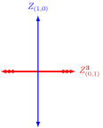
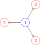
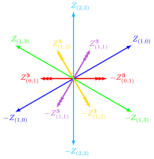

Stroll along the Walls with Python
BPS spectra of supersymmetric theories
Chan Y. Park
Rutgers University
Jan. 25, 2016 @ IPMU
- P. Longhi, CYP, arXiv:1601.02633
- P. Longhi, CYP, arXiv:16XX.XXXXX
- P. Longhi, G. Moore, CYP, D. Park, work in progress
Experimental-Mathematical-Computational-Theoretical-Physics!
- Recent development in both hardware and software of computational tools enabled us to study physical and mathematical problems by combining analytical and numerical methods together, which is proven to be complementary to the traditional pen-and-paper approach for various topics including
- Modern conformal bootstrap using crossing symmetry of 4pt function to derive bounds on spectrum in OPE of fields. [Rattazzzi, Rychkov, Tonni, Vichi (2008)], ...
- Using modular invariance of torus amplitude of 2d CFT to obtain bounds on spectrum [Hellerman (2009)], ...
- And many more...
Why Python?
- Open-source
- Can look into what's going on in the box (if you want)
- A type of software license that goes well with academic researches
- Active and helpful Python community
- Diverse and powerful libraries, including a suite of scientific libraries a.k.a ScyPy stack
- SymPy for symbolic math
- NumPy for numerical computation
- SciPy for scientific computation
- matplotlib for visualization
- And more...
- SAGE for extensive math library
Spectral network and class \(\mathcal{S}\) theory
\(\mathcal{K}\)-wall network and elliptic fibration
Outline
- Introduction
- Lightning review
- \(\mathcal{S}\)-wall network
- Construction of ADE spectral network
- BPS spectrum of pure gauge theory with \(G = \SU(N),\ \SO(2N),\ \gE_6,\ \gE_7\)
- \(\gD_N\)-class Argyres-Douglas fixed point theory
- \(\mathcal{K}\)-wall network
- Construction
- Walls of marginal stability of \(\SU(2)\) gauge theories
- Metric of elliptically fibered hyperkähler manifold
Lightning review
M-theory
- M-theory is a prospective theory of quantum gravity.
- 10d string theories and 11d supergravity are believed to be different limits of M-theory.
- M-theory lives in an 11d spacetime. It has a 3-form gauge field and two kinds of branes that couples to it electrically and magnetically. They are M2-branes and M5-branes, respectively.
M2-brane and M5-brane
- A \(p\)-brane spans \((p+1)\)-dimensional spacetime.
- They are half-BPS objects, meaning they saturate the so-called Bogomolny-Prasad-Sommerfield bound, \[ M \geq \left| Z \right| \] where \(M\) is the mass and \(Z\) is the central charge of the object.
- Because the mass of a BPS object is tied to its central charge, which is a conserved quantitiy that commutes with all the other generators of the SUSY algebra, it is in general stable.
- The stability of a BPS object is useful when we try to extrapolate the study done in a weak coupling regime to a strong coupling regime.
4d \(\cN = 2\) \( \mathrm{SU}(N) \) theory
- When we wrap \( N \) M5-branes on a punctured Riemann surface \(C\), we obtain a 4d \(\mathcal{N}=2\) theory of class S. [Gaiotto (2009)], [Gaiotto, Moore, Neitzke (2009)]
- In the Coulomb branch of a class S theory, the multiple M5-branes becomes a single M5-brane wrapping a complex 1-dimensional curve \( \Sigma \), \[ f(z, x)=0,\ z \in C, \] a multi-sheeted cover \(\{ x_{i = 1, \ldots, N} \}\) over the \(z\)-plane.
- \( \Sigma \) determines the low-energy effective action of the theory. [Seiberg, Witten (1994)]
BPS states of 4d \(\mathcal{N} = 2\) \( \mathrm{SU}(N) \) theory
- A BPS state of the theory is identified with an M2-brane ending along a 1-cycle \(\gamma\) of the Seiberg-Witten curve \(\Sigma\), \[ \gamma \in H_1(\Sigma; \mathbb{Z}). \]
- Its mass is given by integrating a 1-form, called Seiberg-Witten differential, \[ \lambda = x\, \mathrm{d} z. \] along \(\gamma\), \[ M = |Z|,\ Z = \oint_\gamma \lambda. \]
- The boundary of the M2-brane satisfies a differential equation that depends on \(\lambda\) and \(\theta = \arg(Z)\), the phase of the central charge of the BPS state. [Klemm, Lerche, Mayr, Vafa, Warner (1996)]
- Gaiotto, Moore, and Neitzke extended this construction and introduced \(\mathcal{S}\)-walls and spectral networks
ADE spectral network
4d \(\mathcal{N} = 2\) class S theory with \(\mathfrak{g} = \mathrm{A}_n, \mathrm{D}_n, \mathrm{E}_n\)
Spectral cover \(\Sigma_\rho\)
- When a 6d \(\mathcal{N} = (2, 0)\) theory with \(\mathfrak{g} = \mathrm{A}_n, \mathrm{D}_n\), or \(\mathrm{E}_n\) is compactified on a punctured Riemann surface \(C\), we obtain a 4d \(\mathcal{N} = 2\) class S theory whose Coulomb branch consists of degree-\(w_i\) differentials \[ \phi_{w_i}(z) = f_{w_i}(z)\, dz^{w_i},\ z \in C, \] where \(w_i\) is the degree of the \(i\)-th Casimiar invariants of \(\mathfrak{g}\).
- For a \(d\)-dimensional representation \(\rho\) of \(\mathfrak{g}\), we define a spectral cover \( \Sigma_\rho \), \[ \Sigma_\rho = \left\{ \lambda\, \big|\, \det \left[ \lambda\, I_d - \rho(\varphi(z)) \right] = 0 \right\} \subset T^*C, \] where \(\varphi(z)\) is a \(\mathfrak{t}/W\)-valued 1-form field whose Casimirs are \( \phi_{w_i}(z) \), \(\mathfrak{t}\) and \(W\) are the Cartan subalgebra and the Weyl group of \(\mathfrak{g}\), respectively.
Sheets of the cover correspond to weights of \(\rho\)
- There is a natural projection map \(\pi:\Sigma_{\rho}\rightarrow C\) that presents \(\Sigma_\rho\) as a ramified \(d\)-sheeted covering of \(C\).
- Denoting the weights of \(\rho\) by \(\nu_j,\ (j = 1, \ldots, d)\), the sheets above a generic \(z \in C\) are \[\begin{align} \pi^{-1}(z) &= \Big\{ \lambda \in T^{*}C \,\Big|\, \prod_{j = 1}^{d} \left(\lambda - x_j(z)\,\mathrm{d} z \right) = 0 \Big\}, \\ x_j(z)\,\mathrm{d} z &= \langle \nu_j, \varphi(z) \rangle \in \mathbb{C}, \end{align}\] where \(\langle\cdot,\cdot\rangle\) denotes the natural pairing of \(\mathfrak{t}^{*}\) and \(\mathfrak{t}\).
Branch points/cuts correspond to elements of \( W(\mathfrak{g}) \)
- Assume that we trivialized the spectral cover, i.e. we ordered the eigenvalues of \(\rho(\varphi)\) on \(C \setminus \{ \text{branch points and cuts}\}\).
- Monodromy of \(\varphi\) around a square-root branch point is given by a Weyl reflection \(w_\alpha\) of a root \(\alpha \in \Phi(\mathfrak{g})\), thereby corresponding to a face of a fundamental Weyl chamber.
- A higher order branch point corresponds to an edge or the vertex of a fundamental Weyl chamber.
- With a mild confusion, a square-root branch point is labeled by a root \(\alpha \in \Phi(\mathfrak{g})\), and a higher-order branch point is labeled by an ordered set of roots.
How to construct an ADE spectral network
- An \(\cS\)-wall is
- sourced by either a branch point (primary) or a joint (descendant),
- labled by a root,
- grown according to \[\begin{align} &\partial_{t} \langle\alpha,\varphi\rangle = \partial_{t} \langle\nu_i - \nu_j,\varphi\rangle = \\ &= (x_i - x_j) \frac{\partial z}{\partial t} = e^{i\vartheta}. \end{align}\]
- There is a joint iff the two \(\cS\)-walls carry roots that sum up to a root.
- A one-way street \(p\) is a segment of an \(\cS\)-wall delimited by branch points or joints.
- A spectral network \(\cW_\vartheta\) is a network of \(\cS\)-wall for a given \(\vartheta\).
Physical data from an ADE spectral network
2d soliton data
- \(\cS_\alpha\)-wall carries a 2d soliton data \[\begin{align} &\left\{\left. (a,\mu(a))\, \right|\, a\in \Gamma(p), \mu(a)\in\bZ \right\},\\ &\Gamma(z_1) :=\bigcup_{(i,j)\in\cP_\alpha} \Gamma_{ij}(z_1),\\ &\cP_\alpha = \left\{ \left. (i, j)\, \right|\, \nu_j - \nu_i = \alpha \right\}, \end{align}\] where \(\Gamma_{ij}(z_1)\) is a set of (\(\bZ_2\)-extended, \(\ker(Z)\)-equivalent classes of) relative homology classes of open paths on \(\Sigma_\rho\).
- 2d \(\cN=(2,2)\) theory on a surface defect \(\bS_{z_1, \rho}\) has a soliton \(a\) with \(\mu(a) = +1\), and \(\bS_{z_3, \rho}\) has a soliton \(c\) with \(\mu(c) = \mu(a) \cdot \mu(b) = +1\).
- \(\mu(a) / \mu(a') = (-1)^{w(a, a')}\)
Symmetry of 2d solitons
- Let \(z\) be on a street of \(\cS_{\alpha}\), and let \((i,j), (i',j') \in \cP_{\alpha}\) be two distinct pairs. Then, for any soliton \(a \in \Gamma_{ij}(z)\), there is another soliton \(a' \in \Gamma_{i'j'}(z)\) with
- \(Z_{a'}=Z_{a}\),
- \(\mu(a')=\mu(a)\),
- supported on the same soliton tree \(\mathcal{T}_a\).
- Solitons are symmetric under the permutations of the pairs in \(\cP_{\alpha}\), i.e. the symmetry group is \(S_{k_\rho}\) where \(k_\rho = \left| \cP_\alpha \right|\).
\(\cK\)-wall jump of \(\cW\)
- For a one-parameter family of spectral networks, \(\cW_\vartheta\), there is \(\vartheta = \vartheta_\text{c}\) where a spectral network undergoes a topological jump, called a \(\cK\)-wall jump.
- At \(\vartheta = \vartheta_\text{c}\) a two-way street \(p\) appears.
- We can construct a sub-network \(\cW_\text{c}\) that consists of two-way streets of \(\cW_\vartheta\) only.
4d BPS state
- For a two-way street \(p\), calculate \[ Q(p) = 1+\sum_{\substack{\overline{a}\in\Gamma_{ij}(p)\\ \overline{b}\in\Gamma_{ji}(p)}}\mu(a)\mu(b)\,X_{\mathrm{cl}(ab)} = \prod_{n=1}^{\infty}\big(1 + X_{{n\overline{\gamma}_\mathrm{c}}}\big)^{\alpha_{{n{\gamma_\mathrm{c}}}}(p)}, \alpha_{{\gamma}}(p)\in\bZ. \]
- For a \(\gamma = n \gamma_\text{c}\) obtain a (closed and oriented) path on \(\Sigma_\rho\), \[ L({\gamma}) :=\sum_{p\in\cW_\mathrm{c}}\alpha_{{\gamma}}(p)\,\pi^{-1}(p). \]
- The DSZ pairing of two 4d charges is \[ \langle \gamma, \gamma' \rangle_{\text{DSZ}} = (1/k_\rho) \langle L(\gamma), L(\gamma') \rangle. \]
- The 4d BPS index of \(\gamma\) is \[ \Omega(\gamma) = [L(\gamma)]/\check{\gamma}, \] where \([L(\gamma)]\), \(\check{\gamma}\) are 1-cycles corresponding to \(L(\gamma)\) and \(\gamma\), respectively. Each of them is an orbit of a closure of a pair of 2d solitons under the permutation symmetry \(S_{k_\rho}\).
Example: a single hypermultiplet
- Consider \(\fg = \gD_4\), \(\dim(\rho) = 4\). Then \[\begin{align} \cP_\alpha &= \{(12),(34)\},\ \cP_{-\alpha} = \{(21),(43)\}.\\ Q(p) &= 1+ X_{a_{12}}X_{b_{21}} = 1+ X_{a_{34}}X_{b_{43}} \\ &= 1 + X_{\overline{\gamma}} \Rightarrow \alpha_{\gamma} = 1.\\ L({\gamma}) &= p^{(2)}-p^{(1)} + p^{(4)}-p^{(3)}.\\ \Omega({\gamma}) &= [L({\gamma})]/ \check{\gamma} = 1, \end{align}\] where \(\check{\gamma} = \check{\gamma}_{12}+ \check{\gamma}_{34}\) and \[ \overline{\gamma}_{12} = \text{cl}(a_{12} b_{21}),\ \overline{\gamma}_{34} = \text{cl}(a_{34} b_{43}). \]

Pure gauge theories
- A 4d \(\cN = 2\) pure gauge theory with \(G = \SU(N),\, \SO(2N),\, \gE_6\), or \(\gE_7\) is described by \[ \phi_{k}(z) = u_k \left(\frac{\dd z}{z}\right)^k,\quad \phi_{h^\vee}(z) = \left( \mu^{h^\vee} z + u_{h^\vee} + \frac{\mu^{h^\vee}}{z} \right) \left(\frac{\dd z}{z}\right)^{h^\vee}, \] where \(\{u_k\}\) are Coulomb branch parameters and \(h^\vee\) is the dual Coxeter number of \(G\). [Martinec, Warner (1995)] [Keller, Mekareeya, Song, Tachikawa (2011)]
- At the origin of the Coulomb branch, \(u_k = 0\), there are two branch points whose ramification structure is given by the Coxeter element of \(W(\fg)\), and from each branch point \(\cS\)-walls of all root type emanates.
- As we vary \(\vartheta\) from \(0\) to \(\pi\), there is a \(\cK\)-wall jump for each root of \(\fg\), leading to the BPS spectrum of a hypermultiplet for every root of \(\fg\), which is consistent with BPS quiver analysis. [Alim, Cecotti, Cordova, Espahbodi, Rastogi, Vafa (2011)] [Longhi, CYP (2016)]
\(SU(2)\)
\(SO(8)\)
\(\gD_N\)-class Argyres-Douglas fixed point theory
- The AD fixed point of a 4d \(\cN=2\) \(\SO(2N)\) pure gauge theory is claimed to be equivalent to that of a 4d \(\cN=2\) \(\SU(N)\), \(N_\mathrm{f} = 2\) theory. [Eguchi, Hori, Ito, Yang (1996)]
- At a point in the Coulomb branch moduli space where the number of BPS states is minimal, their BPS spectrum can be conveniently encoded into the BPS quiver that has the shape of a $\mathrm{D}_{N}$ Dykin diagram, and the fixed point theory (and its deformations) is termed a \(\mathrm{D}_{N}\)-class theory. [Maruyoshi, CYP, Yan (2013)]
- Using spectral networks of a \(\mathrm{D}_{N}\)-class theory from the 4d \(\cN=2\) \(\SO(8)\) pure gauge theory, we can find that its BPS spectra across different chambers in the Coulomb branch moduli space are the same as those of a \(\mathrm{D}_{N}\)-class theory from the 4d \(\cN=2\) \(\SU(N)\), \(N_\mathrm{f} = 2\) theory. [Longhi, CYP (2016)]
\(\gD_4\)-class AD theory with \(\mathfrak{g} = \gD_{N}\)
- The Seiberg-Witten curve of a \(\mathrm{D}_{4}\)-class theory with \(\mathfrak{g} = \gD_{N}\) is \(\lambda^8 + \phi_2 \lambda^6 + \phi_4 \lambda^4 + \phi_6 \lambda^2 + (\tilde{\phi}_4)^2\) with \[\begin{align} \phi_{2} = s_{2} (\dd z)^{2},\ \phi_{4} = s_{4} (\dd z)^{4},\ \phi_{6} = \left( s_{6} + z^2 \right) (\dd z)^{6},\ \tilde{\phi}_4 = \tilde{s}_4 (\dd z)^{4}. \end{align}\]
- The flavor symmetry is enhanced to \(\SU(3)\) when \(s_4 = {s_2^2}/{4}\) and \(\tilde{s}_4 = 0\), then we can rescale the curve to absorb \(s_2\), therefore the theory has a complex 1-dimensional moduli space determined by \(s = s_6/(s_2)^3\).
- By studying the discriminant of the curve, we find that there are two singularities at \(s = s_\mathrm{t},\ s_\mathrm{s}\). Using spectral networks, we find that at \(s = s_\mathrm{t}\) three BPS states, a triplet of the flavor symmetry \(\SU(3)_\mathrm{f}\), become massless, and at \(s = s_\mathrm{s}\) a flavor singlet BPS state becomes massless.

In the minimal BPS chamber
 In the maximal BPS chamber
Future directions
- For a non-minuscule representation \(\rho\) and/or a non-simply-laced \(\fg\), study
- 2d theory on a defect \(\bS_{z, \rho}\) and its BPS spectrum, and
- ABCDEFG spectral networks.
- Cameral cover, defect, and spectral networks
\(\mathcal{K}\)-wall network
Construction of \(\mathcal{K}\)-wall network
- \(\cS\)-walls are related to BPS states of a 2d theory and are defined on its parameter space.
- Similarly for a 4d \(\cN=2\) theory we construct from its BPS states \(\cK\)-walls in the moduli space of the theory.
- Consider a 4d \(\cN=2\) \(\SU(2)\) pure gauge theory. Its moduli space is a complex 1-dimensional space, and there are two points in the moduli space that correspond to the appearance of a massless BPS state.
- At each point a 1-cycle corresponding to the BPS state shrinks to zero and the Seiberg-Witten curve becomes singular.
- The locations of the points can be obtained by solving the discriminant of the Seiberg-Witten curve, \[\begin{align} y^2 = (x-1)(x+1)(x-u), \end{align}\] which has \(\Delta(u_\pm) = 0\), \(u_\pm = \pm 1\). We use the traditional Seiberg-Witten differential \[\begin{align} \lambda = (x-u) \frac{dx}{y}. \end{align}\]
A \(\mathcal{K}\)-wall
- Consider \(u = u_* = u_+ + \epsilon\). There is only one BPS state whose mass becomes zero as \(\epsilon \to 0\). Denote its central charge as \(Z(u_*; \gamma_+)\), where \(\gamma_+\) is the 1-cycle that shrinks to zero at \(u = u_+\).
- We can find a path \(\cK_{\gamma_+}\) connecting \(u_*\) to \(u_+\) by requiring that \(\arg \left[Z(u; \gamma_+)\right] = \zeta\) to be constant along the path. Running the argument backwards, we can construct a real 1-dimensional line on the moduli space that emanates from \(u_+\) by fixing a phase \(\ee^{i \vartheta}\) and requiring the path to satisfy \[\begin{align} \arg \left[ \partial_\tau Z(u; \gamma_+) \right] = \exp \left( i \vartheta \right). \end{align}\]
- When such a path goes through a certain value of \(u\), it implies that the theory with Coulomb branch parameter having the value of \(u\) has a BPS state of central charge \(Z(u; \gamma_+)\). We will call such a path in the moduli space a \(\cK\)-wall.
Seeding a \(\mathcal{K}\)-wall at a discriminant locus
- From a singularity \(u_i\) corresponding to a non-degenerate root of \(\Delta(u) = 0\), we have a single 1-cycle \(\gamma_i\) that shrinks to zero, and therefore a single \(\cK\)-wall \(\cK_{\gamma_i}\) emanating from such a singularity that satisfies \[\begin{align} \exp \left( i \vartheta \right) = \frac{\partial}{\partial \tau} Z(u; \gamma_i) = \frac{du}{d\tau} \frac{\partial}{\partial u} \oint_{\gamma_i} \lambda = \frac{du}{d\tau} \oint_{\gamma_i} \omega , \end{align}\] where \[\begin{align} \omega = \frac{\partial \lambda}{\partial u} = \frac{dx}{y} \end{align}\] is the holomorphic 1-form of the curve.
- 4d \(\cN=2\) supersymmetry requires that when there is a BPS state there should be its conjugate, therefore it is convenient to consider two \(\cK\)-walls emanating from a single discriminant locus in the opposite directions.
Evolving a \(\mathcal{K}\)-wall and the Picard-Fuchs equation
- Away from a discriminant locus, when we numerically evolve a \(\cK\)-wall, instead of using the integration of a holomorphic 1-form that is more difficult not only to calculate numerically but also to track all the branch cuts, it is easier to use the Picard-Fuchs equation, which becomes a second-order ordinary differential equation for \(\eta_i = \oint_{\gamma_i} \omega\).
- When the curve is in the Weierstrass form, \[\begin{align} y^2 = 4x^3 -g_2(u) x - g_3(u), \end{align}\] the Picard-Fuchs equation is \[\begin{align} \eta_i'' - \left( \frac{\delta'}{\delta} - \frac{\Delta'}{\Delta} \right) \eta_i' - \left[ -\frac{3g_2 \delta^2}{16 \Delta^2} + \frac{\delta'\Delta'}{12\delta\Delta} - \frac{\Delta''}{12\Delta} + \frac{\Delta'^2}{144\Delta^2} \right] \eta_i = 0. \end{align}\]
Intersection of \(\mathcal{K}\)-walls and KS wall-crossing formula
- When two \(\cK\)-walls from different discriminant loci meet, there can be a nontrivial intersection.
- An intersection of two \(\cK\)-walls that carry charges \(\gamma_i = (q_i, g_i)\) is determined by the DSZ pairing of the two charges, i.e. \(\langle \gamma_i, \gamma_j \rangle = q_i g_j - q_j g_i\).
- When \(\langle \gamma_i, \gamma_j \rangle \neq 0\), there will be new \(\cK\)-walls from the intersection of the two \(\cK\)-walls, and their charges and degeneracies are determined by the wall-crossing formula of Kontsevich and Soibelman.
- Pure \(\SU(2)\) gauge theory has two \(\cK\)-walls \(\cK_{(2, -1)}\) and \(\cK_{(0, 1)}\) with \(\langle \gamma_{(2, -1)}, \gamma_{(0, 1)} \rangle = 2\), and the KS wall-crossing formula gives \[\begin{align} \cK_{(2, -1)} \cK_{(0, 1)} = \left( \cK_{(0, 1)} \cK_{(2, 1)} \cK_{(4, 1)} \cdots \right) \cK_{(2, 0)} \left( \cdots \cK_{(6, -1)} \cK_{(4, -1)} \cK_{(2, -1)} \cdots \right), \end{align}\] implying that there are infinitely many \(\cK\)-walls emanating from the intersection of the two \(\cK\)-walls.
\(\mathcal{K}\)-wall network and MS walls of pure \(\SU(2)\) gauge theory
The construction of a \(\cK\)-wall network is similar to that of an \(\cS\)-wall network: build \(\cK\)-walls from every discriminant locus, evolve each of them according to the Picard-Fuchs equation, and find their intersections to spawn descendant \(\cK\)-walls according to the KS wall-crossing formula.
4d BPS spectrum from a \(\mathcal{K}\)-wall network
- From a \(\cK\)-wall network of a 4d \(\cN=2\) theory we can read out its BPS spectrum at a point on its moduli space by observing which \(\cK\)-walls pass through a fixed point in the moduli space as we change the phase of the network.
- From a family of \(\cK\)-wall networks, we can also find walls of marginal stability of the BPS spectrum and study the change of the spectrum as the theory goes over the walls.
- A wall of marginal stability consists of intersections of \(\cK\)-walls.
- Walls of marginal stability define chambers of the moduli space, each of which has a integer-valued function \(\Omega(\gamma; u)\). \(\Omega\) is a BPS index defined as \[\begin{align} \Omega(\gamma; u) = -\frac{1}{2} \mathrm{Tr}_{\cH_1(\gamma, u)}(-1)^{2J_3}(2J_3)^2, \end{align}\] where \(\cH_1(\gamma, u)\) is the Hilbert space of one-particle states of charge \(\gamma\) at \(u\).
- \(\Omega\) is constant when \(u\) stays in a single chamber, and counts the BPS states of charge \(\gamma\).
Metric of elliptically fibered hyperkähler manifold
- \(\Omega(\gamma; u)\) obtained from \(\cK\)-wall networks can be used to calculate the metric of a total space \(\cM\) of an elliptically fibered moduli space of a 4d \(\cN=2\) theory compactified on a circle.[Gaiotto, Moore, Neitzke (2008)]
- Consider compactifying a 4d \(\cN=2\) theory on \(\bR^3 \times S^1\) to get a 3d \(\cN=4\) \(\sigma\)-model whose target space is \(\cM\).
- A 3d supersymmetric nonlinear \(\sigma\)-model with an irreducible target manifold has \(\cN=4\) supersymmetry if and only if the manifold is hyperkähler. [Alvarez-Gaume, Freedman (1981)]
- First find \(\cX_\gamma(x, \zeta)\) for \(x \in \cM'\) that solves \[\begin{align} &\cX_\gamma(x, \zeta) = \cX^{\mathrm{sf}}_\gamma(x, \zeta) \exp \Big[ - \frac{1}{4\pi \ii} \sum_{\gamma'} \Big( \Omega(\gamma'; u) \langle \gamma, \gamma' \rangle \times \\ &\quad \int_{\ell_{\gamma'}(u)} \frac{\dd \zeta'}{\zeta'} \frac{\zeta' + \zeta}{\zeta' - \zeta} \log \left( 1 - \cX_{\gamma'} (x, \zeta') \right) \Big) \Big]. \end{align}\]
- \(\cX^{\mathrm{sf}}\) is the zeroth approximation of \(\cX_\gamma\), \[\begin{align} \cX^{\mathrm{sf}}_\gamma(x, \zeta) = \exp \left[ \pi R \frac{Z_\gamma}{\zeta} + \ii \theta_\gamma + \pi R \zeta \bar{Z}_\gamma \right], \end{align}\] where \(Z_\gamma(u)\) is the central charge, \(\theta_\gamma(u)\) is an angular coordinate of the elliptic curve, and \(R\) is the radius of the \(S^1\). \(\cX^{\mathrm{sf}}\) can be used to solve the integral equation iteratively.
- From \(\cX_\gamma(x, \zeta)\) obtain the holomorphic symplectic 2-form in complex structure \(J^{(\zeta)}\) \[\begin{align} \varpi(\zeta) = \frac{1}{8\pi^2 R} \epsilon_{ij} \frac{\dd \cX_{\gamma_i}(\zeta)}{\cX_{\gamma_i}(\zeta)} \wedge \frac{\dd \cX_{\gamma_j}(\zeta)}{\cX_{\gamma_j}(\zeta)}, \end{align}\] where \(\dd\) is a differentiation on \(\cM\) with \(\zeta\) fixed, \(\epsilon^{ij} = \langle \gamma_i, \gamma_j \rangle\) of the charge lattice \(\Gamma_\mathrm{g}\). The holomorphic data determines its metric.